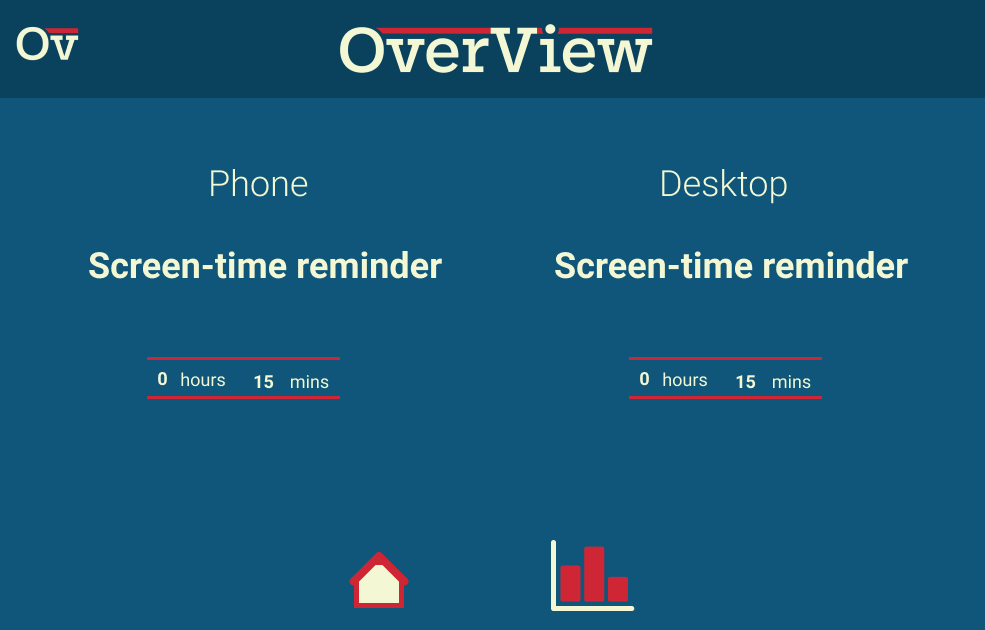

The idea of Overview is that you will be left with a better understanding of your
internet habits across devices. With simple information provided
you will be able to grasp how much of your time the internet takes up in any given day, or across weeks
and months. With this information, you may gain a new perspective which will alter your relationship
with the internet for the better.

-
5.1 billion
The amount of unique mobile users in the world today
-
1,000,000
People have joined the internet each day since January 2018
-
6.5 hours
As a species, we average more than 6 and a half hours per day browsing the internet
-
100 / 365
We spend a total of more than 100 days online per year for each internet user
-
2X
Studies have shown we grossly under estimate how much we check our phones. Participants in
this study
were checking their phones twice as much as they estimated
-
Time
This study
reveals how viewing internet content alters our perception of time.
People tend to underestimate the amount of time they've spent browsing
How it works
OverView tracks your internet usage and provides simple, useful data. By understanding your online habits, you can work towards building a better, healthier relationship with the internet.
The OverView homepage shows up after any extended (20min+) browsing session. It will show you both your "session time" (the time you spent browsing uninterrupted) as well as your total screen-time across devices. OverView can be installed on as many devices as you need, this way you get the full picture of your browsing time and habits. Also shown is a breakdown of the amount of data consumed, alongside how many words and pictures have been loaded during your browsing time. In addition to this, you also have the option to rate the value you got out of your browsing. "Value" is subjective, and personal to you — so this rating should reflect how you feel about what you gained or learned from your browsing time.
These graphs will be a useful tool in understanding your habits, and are one of the more valuable features that OverView offers. The graph on the left breaks down your total screen-time across the week, and will eventually build a more detailed view across the months and eventually years. This data will all be stored within OverView, so you can come back and compare different weeks to understand yourself and your habits. The other side of this is the self-reported value rating graph. In conjunction with the screen-time statistics, this will allow you to examine where your time is going, and how you view the value of the content you've been browsing. Finally, your screen-time will be compared with statistics from national averages, which will allow you to gain a new perspective on your habits, and even work towards goals of being "x minutes under the average".
Reminders
Keep track of your browsing time, and stay on task with screen-time reminders.
One of OverView's other functions is to send you reminders during your browsing sessions. These come in the form of unobtrusive, simple pop-ups that will notify you of how long you've been browsing for. The intention behind this is to keep you informed. It's easy to lose track of how much time you've spent browsing, and we know that people's perception of time is altered when they are using the internet. This functionality will allow you to keep track of your time, and get back on task if you've been distracted by entertaining content.
Settings
OverView allows you to set your preferences to your liking.

If you're not keen on receiving screen-time reminders frequently, you don't have to.
Set your frequency here, and come back to change it any time you like. You can also set different frequencies
for each of your devices. For example if you know you have bad habits when it comes to your
phone, then simply set the reminder to be more frequent for that device.
Does OverView sound like it could be useful for you?
Try it out!